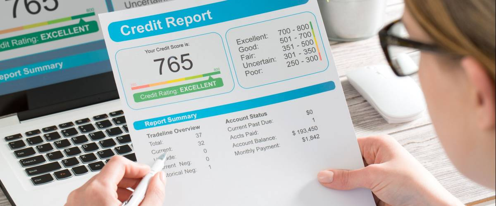

Welcome to CreditScore
Free Credit Score - Credit Sesame
2020.12.02 15:20Credit Sesame Credit Cards Best Credit Cards Rewards Credit Cards Cash Back Credit Cards Balance Transfer Cards Low Interest Credit Cards Airline Cards for New to Credit Cards for Poor Credit Cards for Fair Credit Cards for Good Credit Cards for Excellent Credit Search All Cards Sesame Cash Sesame Cash Account Cash Back Offers Card Protection Home & Auto Auto Insurance Auto Loan Rates Home Insurance Home Purchase Mortgage Refinance My Home Value (Free for Members) My Home Buying Power (Free for Members) Life Insurance ID Theft Free Identity Theft Protection Upgrade to Premium Loans Student Loans Personal Loans CD Rates Savings Accounts Credit Score Free Credit Score Free Credit Report Card Free Credit Monitoring My Credit (Free for Members) My Alerts (Free for Members) My Debt (Free for Members) My Assets (Free for Members) More How It Works Blog From our Experts Login Sign Up Login
Free Credit Score
No credit card. No trials. No commitments. By clicking on the button above, you agree to the Credit Sesame Terms of Use and Privacy Policy X Free Credit Score, No Credit Card or Subscription Get My ScoreWhy Choose Credit Sesame’s Free Credit Score Check?
X
Credit Check
We pull your credit information from TransUnion so reviewing your credit factors that influence your credit score is made easy and intuitive.
P
Save Money
Our advanced analyticals understands your credit and debt to give your customized recommendations on which credit cards or loans to choose so you can save.
f
Credit Monitoring
Our free credit monitoring services include real-time alerts about important changes to your credit, $50k identity theft protection and restoration, and regular credit checks to help you pinpoint and address any errors that may appear on your credit report.
A
Credit Card Offers
Choosing the best credit card can be difficult, but with Credit Sesame’s recommendation engine we make it easy by helping your select the credit card best for you.
V
Community
Discovering how others improve their credit score is a great way to learn and with our community of members you can join in on the conversation.
n
Loan Offers
Finding the right personal loan, car loan, or student loan is now easy with our in-depth credit and debt analysis of your account that gives you specific recommendations.
Is My Credit Score Really Free?
Yes! Check your credit score for free!
At Credit Sesame we believe that credit checks are vital to your financial well being. This is why offering you this free service is an important part of our company. Our patent pending analyses take a look at your credit history and debt situation to advise you on how much you can save on loans, credit card debt, and your home mortgage. Being aware of your credit score will help you understand your financial standing and give you the ability to know what next steps to take to further improve it. Get Started NowHow Does Credit Sesame Work & How Does It Find My Credit Score?
Manage your finances, all in one place
Credit Sesame automatically pulls in your credit information every month from TransUnion’s VantageScore, including your free credit score and your debts, and always for free.
Get personalized, tech-driven recommendations
With the aid of our Robo Credit technology, we deliver customized recommendations that help you make the most of your finances.
Get Your Free Credit Score Get Started NowWhat Can You Do With Your Score?
Navigate to your financial future starting with your credit score.
We use TransUnion (VantageScore) to show you what’s impacting your credit score, if you are overpaying on your loans and credit cards, and how your financial picture compares to your peers. We’ll show you personalized, objective savings recommendations on home loans, credit cards, auto loans and more.
How Often Do Credit Scores Change?
Example Timeline of Credit Score Changes
Credit scores can change once a week for some and not at all for months (or even longer) for others. It usually takes specific changes to your credit information for your score to move, and once these changes occur, it could take some time for your credit report to reflect your new status. Due to this fact, you may want to consider tracking your credit score over longer periods of time. While the fact that your credit score hasn’t moved in a few months might seem concerning, it will likely seem less so in the context of a sixty-point improvement over an entire year.
Starting to Improve Your Credit
When you open a new line of credit, a few immediate changes are usually made to your credit report. Most instantly, a new hard inquiry will probably be added to your report, and your average age of credit history could drop. Due to these factors, opening a new account is likely to drop your credit score in the short term. However, as you begin to diligently pay off your bills, the additional on-time payments, the higher number of total accounts and your now-growing age of credit history will likely outweigh the initial downsides, and your score can benefit in the long term.
Frequently Asked Questions (FAQs)
What is Credit?
Credit is simply the ability for a consumer to be able to borrow money in order to purchase a product or service. You can get credit from a grantor (for example, from a bank), to whom you will need to pay back the full amount and possible interest charges that might add up over the period of time. There are four different types of credit starting with revolving credit, charge card, service credit, and installment credit. When you get credit and pay it back on time your credit rating improves over time and allows you the opportunity to borrow more from grantors. You have several credit scores you can check from the three top credit bureaus to see where your stand in the range. Check your credit often to see where you stand.What is Bad, Good, & Excellent Credit?
The most popular credit scoring system in the United States is based on the FICO (Fair Isaac Corp.) range. This scoring range starts at 300 as the poorest score and goes up to 850 as the highest range possible, or excellent credit. Specifically, bad credit ranges from 300 to 629, fair credit ranges from 630 to 689, good credit ranges from 690 to 719, and finally, excellent credit which ranges from 720 and to 850. Other popular credit score range formulas exist, such as the VantageScore, which is what TransUnion, our credit score provider uses. It too ranges from 300 to 850. Checking your credit score with Credit Sesame is easy and can be done every month to see how your credit is performing.How Do I Check My Credit Score?
Checking your credit score is quite easy with Credit Sesame and can be done in 90 seconds. You can do a free credit check once a month with a basic account or get daily free credit checks with a premium account. Once you open your new account you will get an instant credit check from TransUnion, using VantageScore 3.0, which has their own way to calculate credit scores. Other credit score models include the FICO score, which uses a different methodology to calculate your credit. You can use our reports to determine the types of accounts you have open, your credit utilization, and many other important metrics that you need to know in order to understand where you stand on the credit range. This will help you determine your financial health.How Does My Free Credit Score Check Affect My Credit?
When you check your credit score for free with Credit Sesame it makes no impact on your credit score since it is a soft credit check, not a hard credit check. When doing a soft credit check you are only pulling your credit score to view how you are performing, not because you are applying for a loan or other type of credit that you are hoping to get approved for. You do a free credit check online as many times as you like (at a cost if done more than once monthly) and it will not affect your credit standing. If you plan on applying for a loan, then you are saying that the lender can “check my credit” to see if you can be approved. This type of inquiry will affect your credit score.What is a CPN Number?
A Credit Privacy Number (CPN) is a 9 digit number that is free and legal to get depending on how you use it. You will commonly find high-level business or government officials and members using this number that allows them to protect personal information for security reasons. You still need to have a social security number, as the CPN number is not a replacement for it. This number is used for business purposes that can allow a business to build credit, while not affecting in any way your current or past credit history. You will still rely on your credit score for personal use and it will determine you ability to get loans and other types of credit once you apply for it.Does Doing a Free Credit Check with Credit Sesame Hurt My Credit?
There are only certain factors that can affect your credit score. Some of those factors are your payment history, credit utilization rate, credit age, account types, and the amount of credit inquiries you have on your account. More importantly, it also matters that type of inquiries that occurred. If it was a simple soft credit check, that Credit Sesame performs, your credit will not be affected. On the other hand, if you have had a hard credit inquiry, for example applying for a loan, will slowly reduce your credit score. Typically, the reduction in your credit score will be minor and rebounds afterwards.What is My Credit Score Upon Account Opening?
Everyone begins with a blank slate, without any records or credit score. If you do not have any data on your consumer report you cannot have a credit score since there is nothing to calculate. The credit bureaus will begin collecting your data at the age of 18 if you begin to borrow credit. This means what when you are getting your credit card or loan you will have to go to banks or other lenders that will approve those with no credit history – usually meaning you will end up paying high interest rates. The lender will pull your credit score and find nothing upon credit request. If you are approved and pay you wills on time the lender will typically report it to the bureau.Can I Check My Credit Score Everyday?
Credit Sesame will give you your free credit score once a month based on the VantageScore. You can check your credit score everyday but it will cost you. Typically, your credit score will gradually improve over time, so it is best to check on occassion to see a much more significant improvement or decline. If you do choose to check your credit score often you do not have to worry about it affecting your credit score. There are two types of credit inquiries that can happen. Hard inquiries are the types of credit checks that can impact your credit score slightly and is usually done by a creditor. While soft credit checks will not impact your credit score.What is in a Credit Score
Payment History
Credit payment history determines 35% of a FICO Score. The first thing any lender wants to know is whether you’ve paid past credit accounts on time. This is one of the most important factors in a FICO® Score.Credit Age
Your credit age plays a role in your final credit score. It consists of factors such as age of oldest credit account, newest credit account, average of all accounts, types of accounts (mortgage, auto loans, etc), and last time each account was used.Credit Utilization
Your credit utilization is the ratio of the amount of your credit card balances compared to the credit limits you have available. For example, if you have $500 credit balance while your limit is $1000, then your credit utilization is 50%.Account Mix
Accounts mix (or credit mix) involves different types of accounts that you have, such as revolving accounts, installment accounts, or open accounts. Having a mix of accounts does have an impact on your overall credit score.Credit Inquries
When applying for credit, lenders will check your credit score (inquiry), which will impact your credit score depending on your account. A soft inquiry will not affect your score but a hard inquiry on the other hand will.Credit Score Range
Poor (Bad) Credit Score
If you have a bad / poor credit score then it means you are sitting between the credit score range of 300 to 629, which is were about 22% of Americans are currently sitting. Having a bad credit score does have quite a significant impact on your ability to borrow credit from lenders. Getting anything from an auto loan to an excellent credit card at low interest rates will very difficult to achieve. Auto or home insurance can be higher along with utility deposits that those will higher credit score usually get to skip on will not be likely. Dipping to a bad credit standing usually means you forgot to pay some bills on your credit card or car loan but it isn’t the end of your ability to credit. You can find providers who will be willing to lend and if you continue paying your bills on time your credit can improve over time.
Fair Credit Score
If you are sitting at fair credit then you are right between bad and good credit. This usually means that you are between the low and mid 600’s. At this credit score range you will have a lot more options available than those with bad credit score ranges. At this point you can start applying for mortgages which typically begin at the score of 620. Auto loans are quite common in this range as well. When it comes to credit cards you begin to have a lot more options as well but not quite to the point where you can enjoy 0% interest rates or high rewards. At this point the most ideal option is to continue to push for a good credit score to open up even more options when it comes to mortgages, loans, credit cards, and more.
Good Credit Score
A good credit score ranges from 700 to 749 according to the FICO credit range while on a Vantage Score 3.0 you would end up at a B grade. You can check your credit score for free with Credit Sesame to see whether you fall inside the ‘good’ credit range. If you find yourself below the ‘good’ range then you can do several important actions to get yourself back up. First pay your bills on time, watch your balances, don’t go overboard applying for credit, live within your means, mix up your accounts, and finally, look into the future – credit history counts. With a good credit score range you will get a lot of great perks when it comes to applying for credit such as credit cards or loans.
Excellent Credit Score
If you find yourself sitting at an excellent credit score range then you are on the range of 750 or above according to the FICO range or an A if you are measuring based on the VantageScore 3.0 range. Getting to this position in the credit scale means that your payment history, credit utilization, credit age, credit mix, and inquiries are at the perfect (or excellent) amount. Having excellent credit opens numerous doors to the top credit card offers, best rates of loans, and other offers offered by lenders. This doesn’t mean that you are ‘done’ building your credit, especially if you are on the low end of excellent. It is recommended to continuously improve your credit.
What Can Hurt Your Credit?
^ Hard Inquiries
Checking your credit can affect your credit score but only if it is a hard credit inquiry. This type of credit check is typically done by creditors when they want to see your entire profile in order to approve or decline you for credit when you are applying. Keep in mind that this is usually a small decline and temporary until you start paying your loan back. Be sure to check your credit score every month from Credit Sesame to see if you have anything negative on your credit report.^ Loan Default
Missing a payment on a loan, whether student or personal, will have a negative impact on your credit score. It is important tht you set reminders for yourself to pay your bills on time or you can potentially slip into a lower credit range bracket limiting your ability to get new credit at low rates. Loan defaults remain on your credit history for 7 years. Paying it back will be your top priority at that point.^ Late Payments
You can be late to make a payment by 5 days or a month it won’t matter, having late payments on your report will have an impact on your credit score. Other consequences include being charged a late fee and increased interest rates on your account. Not every lender will report to the bureau, so don’t be surprised if it doesn’t end up on your file.^ Collections
Not paying your bills on time can make your debt end up in collections. For example, if you become delinquent on a debt, whether it is a medical bill or credit card bill, this type of debt can end up at a collections agency who will then try to recover that lost debt. Checking your credit score for free with Credit Sesame to see your credit standing and whether you have anything negative on your report.^ Bankruptcy
Filing a Chapter 7 or Chapter 13 bankruptcy is common among those who cannot handle their debt and need a way out. The way this impacts your credit score really depends on how your score was when you applied for bankruptcy, it will affect different ranges differently. If you had a good standing, your score will dip quite a bit, while on the other hand if you already had fair or bad credit, the dip won’t be as significant.
What Can Help Your Credit?
% Disputing Errors
The latest FTC report shows that approximately 1 in 4 Americans found at least one significant error on their report. What most aren’t aware of or take action on is the ability to dispute credit report errors with the bureaus. First, spot the error on your credit report. Review all of your reports with the bureaus to make sure you have all the information. Next file the dispute with the right bureaus online. Finally, follow up.% Paying Debt
Make sure that you are paying all of your debt on time if possible. Doing so will not only improve your credit rating it will ensure that it doesn’t decline. Paying your debts on time will eventually open up more doors to better interest rate credit cards and other more attractive credit offers. You can set up alerts as reminders to pay your bills so it won’t slip your mind.% Rent
Although not every landlord does so, rent can play a role in improving your credit score in some cases. Making sure that you are paying your rent on time every month is just as important as paying any other bill or debt. Not doing so can make it end up as a late payment and impact your credit score negatively. Ask your landlord if they submit to any of the three major bureaus.% Good Debt
Do not remove debt that has been on your credit report for a while and has been paid on time and in full. Leaving good debt and closed accounts is actually good for your credit report and can help improve your credit score by showing your committment to paying your creditors.% Increasing Credit Limit
Try to increase your credit line which will in turn improve your credit utilization ratio (percentage of your credit limit that you have used) which will in turn help improve your score. You typically get the option to do this with your credit card issuers, and if it is offered we recommend you take it.
Credit Report vs. Credit Score : What’s the Difference?
Free Credit Report Free Credit Score What is it? Your credit report is a summary of all of your credit history over time. Your credit score is a formula used by bureaus to determine how creditworthy you are. Where can you get it? You can get your report with Credit Sesame or with an major credit bureau. You can get your credit score from Credit Sesame or other places such as myFico. What kind of information does it show? Name, address, and social security number Types of credit you use Dates of new credit lines Balances & available credit Accounts that are in collections Any recent credit Information related to bankruptcy, tax liens, and court judgements The amount of debt you owe The length of your credit history What your credit mix is made up of New credit Who uses which? Your creditor will typically do a hard credit inquiry to see if there is risk to giving you credit. Your utility or phone company will do a soft credit inquiry before making a decision if you have to make a downpayment or not.Credit Myths
My credit report is the same at all three bureaus
Your credit report will not be the same across all of the three major bureaus (Experian, TransUnion, and Equifax) because not all lenders report to all three. Some might have inputted the data wrong and might show up with errors while others might be perfectly correct. That is why it is important to check your report from all three of the major bureaus at least once a year (which is free) to determine if there are any issues. You cannot make any lender report your credit, so it is important to know the differences between your reports since different lenders pull your report usually from different bureaus.Lenders are required by law to report my payments to bureaus
Lenders are not required by law to report to credit bureaus but they typically do report to at least one bureau. This is why your credit reports might not be the same across all bureaus. Some lenders might report it to one bureau while others might report to all three – while others won’t report it at all. Check your credit score and credit report across all major bureaus to make sure that you have no errors being reported as that would be a much bigger issue than your credit reports in one bureau missing some information.Paying off bad debts, past due payments, collections, tax liens will remove them from my report
Your debts and collections will remain on your credit report. Most items ranging from bankruptcies to collections will remain on your credit report for 7 years. It impacts different credit scores differently as well. For example, if you are looking at your FICO score, then the age of the bad debt or collections account will have less impact the older it is, compared to other credit scores who do not take that into account. Bankruptcies can vary as well, where Chapter 10 remains for 7 years, Chapter 7 will remain on your credit report for 10 years.Checking my own credit report will hurt my credit score
Checking your own credit score will not impact it in anyway positively or negatively. There is a difference between doing a soft credit check, which is what utility companies, landlords, or cell phone companies may do to see if you qualify for perks such as not having to pay a downpayment, and other types of credit checks that lenders usually do, which are called hard credit inquiries. Hard credit inquiries will typically reduce your score by a slight amount, but only temporarily until you start paying your loan. Sign Up in 90 seconds. It is truly free.Comments(13)
Credit Sesame • October 19, 2016 Hi David, Your business credit score is not related to your actual personal credit score. They are completely separate with different variables that get measured to determine your credit worthiness. For example, personal credit scores usually range from 300 to 850, while business credit scores range from 0 to 100. Reply Kirby A Dorff • March 24, 2020 Everything's good Reply Cecilia Metzgar • April 3, 2019 How can I get my credit score if I don not have a cell phone? Reply Credit Sesame • March 27, 2020 Hello. Please visit our website at www.creditsesame.com for more information. Reply William S Johnson • March 8, 2020 Valuable Reply Tawnya Wever • March 22, 2020 Thank you for the information I learned a lot Reply RYAN CARSON • March 24, 2020 I need help Reply Lorraine Garry • April 2, 2020 What credit bureaus do you use? Experian, TransUnion and Equifax? Reply Credit Sesame • April 3, 2020 Hi Lorraine. For your free score, we use TransUnion. Members who pay for the service get all three (Experian, TransUnion, and Equifax) scores updated monthly. Reply Cajetan Desmond • April 14, 2020 Nice and interesting article, I love that Reply Mohammed haq • August 13, 2020 I was trying to login but I couldn't log into my account did not know what went wrong Reply George B Amburgey • August 18, 2020 Credit Sesame save my email and password. Why doesn't it just come up? I can't get into my account. Reply ronald lewis • August 26, 2020 thank you Reply Products Free Credit Score Free Credit Monitoring Free Credit Report Card Free Identity Theft Protection Sesame Cash Company About Us Our Team Careers Press Become an Affiliate Scholarship Program Credit Resources Blog What Is A Good Credit Score? How Does Credit Repair Work? Guide to Increasing Your Credit Score Fast Legal Terms of Use Privacy Policy Policies Help & Support Contact Us FAQs Help Center Q&A Forum Sitemap444 Castro St., Ste 500, Mountain View, CA 94041
100 Montgomery St., Ste 2500, San Francisco, CA 94104
Copyright © 2010 - 2020 Credit Sesame, Inc. | All rights reserved.
